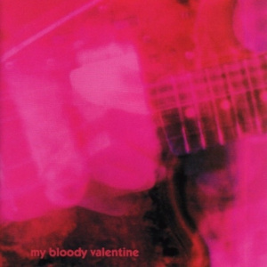
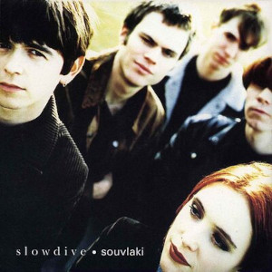
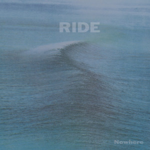
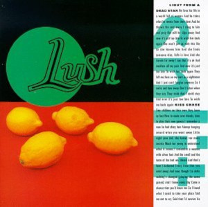
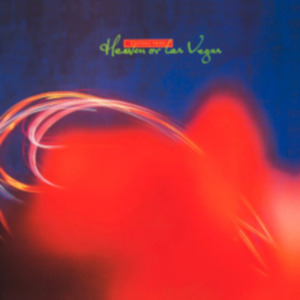

Loveless

O álbum Loveless é dito como o primeiro, e fundador do estilo Shoegaze, ele foi o maior responsável pelo seu sucesso e influência sobre as próximas bandas que serão citadas abaixo. O álbum expressa um amor pessimista e indeciso que atravessa distorções, drive e um ruídos ambientais característicos do Shoegaze, além de uma voz suave e melancólica que quase soa como figurante de seu próprio show. A complexidade na gravação de Loveless se dava em detrimento da sonoridade específica que Shields queria retirar. Segundo ele, o álbum demorou para ficar pronto porque “até o último minuto, achávamos que terminaríamos tudo em mais dois meses. Passamos dois anos achando que terminaríamos tudo em mais dois meses”. Essa fórmula encontrada pelo grupo evidencia a ignorância daqueles que acreditam ser apenas barulho. Invariavelmente, o disco ou te prende imediatamente ou te afasta assustado, mas há algo que soa uniforme. Para chegar nesse resultado de novo, o My Bloody Valentine só lançou outro álbum inédito vinte e dois anos depois, intitulado m b v (2013), e igualmente genial.
Souvlaki

Souvlaki é um ábum majestoso que absorveu toda aura de Loveless como um vampiro faminto e não só reviveu graciosamente um estilo tão único e mágico, como revolucionou tudo q já sabíamos sobre Shoegaze, sem fugir de suas origens. Se eu fosse traduzir esse álbum seria como a brisa de um dia frio e ensolarado; ou como uma memória feliz. Todas suas faixas são igualmente perfeitas e balanceadas; Suas letras não são tão profundas, elas são abstratas e falam sobre garotas, término, sol e frio, mas são ditas da forma mais doce e poética possível; me fazendo crer que nem mil das palavras mais lindas seriam ditas como as desse álbum. Com uma maior diversidade de ambientações ao longo de suas 10 faixas, o álbum confirma a banda como umas das representantes máximas de uma vertente musical que tem no uso de texturas e camadas de guitarras sob modulações e efeitos os elementos sobre o qual sua música é construída. É um retorno às propostas do Cocteau Twins, mas sob novas perspectivas, seja de timbres ou da maneira como os vocais se encaixam nas canções. Hoje o álbum pode ser chamado de um clássico do gênero, seja ele shoegaze, dream-pop ou outro nome que se queira usar. Se há álbuns que são lançados na época certa com a “música certa”, “Souvlaki” padeceu por ter o efeito oposto. Num cenário musical polarizado por duas vertentes – o grunge (já em descenso) e o britpop (em ascensão) –, o mundo não estava preparado naquele momento para os acordes lentos e melancólicos de canções como “Machine Gun”, “Souvlaki Space Station” (um reverberante turbilhão sonoro conduzido por um riff encharcado de delay e uma linha de baixo dub de Nick Chaplin), “When The Sun Hits” (onde os riffs atingem a estratosfera) e “Melon Yellow” (com linha de baixo profundíssima!); ou para o lado mais bucólico de “Sing”, “Here She Comes” e a arrasadora “Dagger”.
Nowhere

"Nowhere" é o álbum de estreia da banda britânica de shoegaze Ride, lançado em outubro de 1990 pela Creation Records. É considerado um dos marcos essenciais do movimento shoegaze e um dos álbuns mais influentes do gênero. O álbum foi produzido por Marc Waterman e Alan Moulder, que também trabalharam com bandas como My Bloody Valentine e The Jesus and Mary Chain. A sonoridade de "Nowhere" é caracterizada por camadas de guitarras distorcidas, efeitos atmosféricos, vocais etéreos e melodias cativantes. O título do álbum, "Nowhere" (em português, "Lugar Nenhum"), evoca uma sensação de escapismo e surrealismo, refletindo a atmosfera etérea e introspectiva presente na música do Ride. "Nowhere" recebeu aclamação da crítica na época do seu lançamento e continua a ser reverenciado como um dos álbuns mais importantes do shoegaze. Sua influência pode ser ouvida em uma variedade de bandas contemporâneas e seu legado perdura na cena musical até os dias de hoje.
Split

"Split" é o terceiro álbum de estúdio da banda britânica Lush, lançado em junho de 1994 pela 4AD Records. Este álbum é frequentemente citado como um dos lançamentos mais influentes do gênero shoegaze e também marcou uma transição para um som mais pop e acessível para a banda. O álbum "Split" foi produzido por Mike Hedges, conhecido por seu trabalho com bandas como The Cure e Siouxsie and the Banshees. Ele capturou a essência da banda, combinando os elementos característicos do shoegaze, como camadas de guitarras etéreas e texturas sonoras atmosféricas, com melodias cativantes e acessíveis. "Split" recebeu elogios da crítica na época do seu lançamento e é amplamente considerado um dos álbuns mais influentes do shoegaze. Sua fusão única de elementos do gênero com sensibilidades pop ajudou a solidificar o status da Lush como uma das bandas mais importantes da cena musical dos anos 90.
Heaven or Las Vegas

"Heaven or Las Vegas" é o sexto álbum de estúdio da banda escocesa Cocteau Twins, lançado em setembro de 1990 pela gravadora 4AD Records. É frequentemente considerado um dos álbuns mais importantes não apenas do Cocteau Twins, mas também do gênero dream pop e do movimento shoegaze. Produzido pela própria banda em colaboração com Robin Guthrie, o álbum apresenta a característica sonoridade etérea e atmosférica do Cocteau Twins, combinando texturas sonoras densas, guitarras etéreas e os vocais distintivos de Elizabeth Fraser. "Heaven or Las Vegas" recebeu aclamação da crítica na época do seu lançamento e é considerado um dos álbuns mais influentes do Cocteau Twins e do movimento dream pop em geral. Sua combinação única de melodias cativantes, texturas sonoras densas e os vocais angelicais de Elizabeth Fraser ajudaram a solidificar o status da banda como uma das mais inovadoras e importantes da cena musical dos anos 80 e 90.